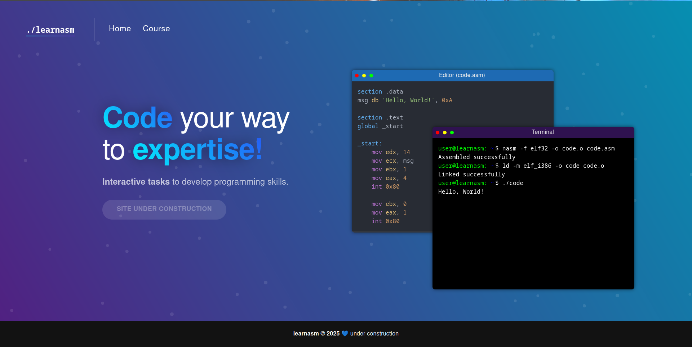

Low Level Programming
Recently I've taken a liking to C language, which is free of slow (but often convenient) things like objects, and instead forces you to have some deeper understand of how things are built. After starting my journey with programming with Python that's a difference as big as it gets.
Other than C, I've found Assembly interesting, while not particularly practical for creating applications, it's a challenging learinng experience.
The biggest problem are I've encountered with assembly was trying to learn it. Most tutorials are either 1000 pages long books or so incomplete that they don't even mention operations on decimals.
So, me and one of my friends have decided to make a better alternative, which is currently under construction at learnasm.com.